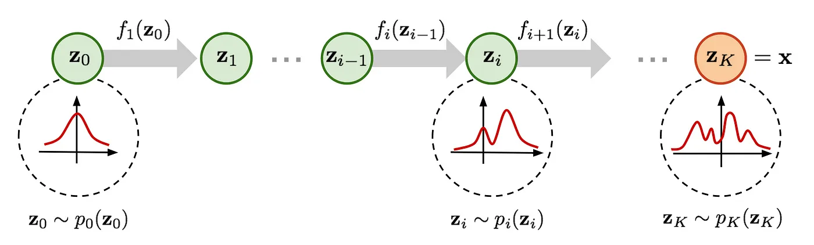

最大似然估计¶
1. 生成模型可以根据其目标和方法分类¶
| 模型类别 | 目标 | 典型模型 | 应用领域 |
|---|---|---|---|
| GAN | 最小分布距离 | GAN DCGAN、StyleGAN、BigGAN | 图像生成 |
| 隐变量模型 | 最大化对数似然 | VAE, PixelVAE | 图像生成、序列生成 |
| 概率密度估计 | 最大化对数似然 | Normalizing Flow, Energy-Based Models | 密度估计、图像生成 |
| 逐步最大似然估计模型 | 逐步最大化对数似然 | DDPM、Latent Diffusion Models (LDM) | 图像生成、补全、超分辨率 |
| 自回归模型 | 最大化条件对数似然 | 自回归模型 | 图像生成、补全、超分辨率 |
| 几何/物理约束模型 | 最小化重建误差 | NeRF, DeepSDF | 三维建模、视点合成 |
| 规则/统计生成模型 | 基于规则或经验 | Procedural Generation, SMOTE | 数据增强、生成纹理 |
| 离散生成模型 | 离散最大似然估计 | GPT, Transformer | 文本生成、代码生成 |
| 稀疏/压缩生成模型 | 稀疏表示或压缩后重建 | Sparse Coding, Autoencoders | 特征提取、数据压缩 |
| 混合生成模型 | 结合多个生成目标 | VAE-GAN, Diffusion-GAN | 图像生成、高质量数据生成 |
主要生成任务使用的方法
| 数据类型 | 常用方法 | 特点 | 典型模型 |
|---|---|---|---|
| 图像生成 | GAN、扩散模型、VAE、自回归模型 | 生成质量高，适合单帧图像生成，多样性和控制性视模型而定 | StyleGAN、DDPM、PixelCNN |
| 语音生成 | 自回归模型、谱图生成、GAN、扩散模型 | 高保真语音生成，常结合声码器完成端到端生成 | WaveNet、Tacotron、HiFi-GAN、DiffWave |
| 视频生成 | GAN、自回归模型、扩散模型、混合模型 | 视频生成需要考虑时间一致性，模型更复杂，生成质量依赖于时间和空间的建模能力 | MoCoGAN、VideoGPT、Video Diffusion Models |
接下来我们主要介绍在最小距离分布和最大似然估计的框架下，怎么统一解释不同的生成模型。同时最大似然估计是最小分布距离的一种特例，我们其实可以在”最小距离分布“这个统一的框架下来解释生成方法的原理。
记住这个公式，最大似然估计的表达式
从离散的角度，最大似然估计表示为
2. 定理1. MLP 是最小化分布差异的特定形式¶
证明: 先说明结论：两个分布间的“距离”可以用不同的指标来衡量（如 KL 散度、Jensen-Shannon 散度、Wasserstein 距离等）。MLE 的目标是最小化 KL 散度：
因此，MLE 可以被认为是以 KL 散度 作为距离衡量标准的特例。 下面我们只要证明MLP目标等价于优化KL散度就行。
其中
展开为
第一项和\(\theta\) 也就是模型无关，因此可以忽略。第二项和\(\theta\)有关，因此可以看成KL的目标。
另外MLE的原始定义为
从这个角度从新不同的生成模型，包括VAE, GAN, Diffusion等等，它们的目标都是最小化生成分布和原始数据分布的差异(距离)的最小化。
3. 定理2：gan的优化目标等价最小化分布距离¶
GAN的目的是最小化分布差异，其中vanila GAN的目的是最小化两个分布之间的JSD散度, WGAN的目的是最小化连个分布之前的Wasserstein距离
证明：
1. Vanilla GAN 的优化目标与 Jensen-Shannon 散度
1.1 GAN 的优化目标
GAN 的目标函数由生成器 \(G\) 和判别器 \(D\) 的对抗博弈组成：
其中：
-
\(p_{\text{data}}(x)\)：真实数据分布。
-
\(p_\theta(x) = G(z)\)：生成分布。
1.2 判别器的优化
对于固定的生成器 \(G\)，判别器 \(D\) 的目标是最大化：
优化 \(D(x)\)：
假设 \(D(x)\) 输出的值是 \(D(x) \in [0, 1]\)，对其求导并找到最优解
此时最优判别器 \(D^*(x)\) 表示输入样本来自真实分布的概率。
1.3 将最优判别器代入损失
将 \(D^*(x)\) 代入 GAN 的目标函数，得到生成器的优化目标：
化简：
其中 \(D_{\text{JS}}\) 是 Jensen-Shannon 散度 ，定义为：
\(m = \frac{1}{2}(p_{\text{data}} + p_\theta)\)。结论： Vanilla GAN 的优化目标是最小化生成分布和数据分布之间的 Jensen-Shannon 散度。
2. WGAN 的优化目标与 Wasserstein 距离 2.1 WGAN 的目标函数
WGAN 的目标函数是：
2.1 约束条件：
-
判别器 \(D(x)\) 不再输出概率，而是标量值。
-
\(D(x)\) 是 1-Lipschitz 连续函数，即满足 \(|D(x_1) - D(x_2)| \leq \|x_1 - x_2\|\)。
2.2 Wasserstein 距离定义 Wasserstein 距离（\(W_1\) 距离）定义为：
其中 \(\Pi(p_{\text{data}}, p_\theta)\) 是所有使边缘分布为 \(p_{\text{data}}\) 和 \(p_\theta\) 的联合分布。 根据 Kantorovich-Rubinstein 对偶性，Wasserstein 距离可以重写为：
3. 总结
-
Vanilla GAN： 判别器 \(D\) 输出的是概率，优化目标是最小化生成分布和真实分布的 Jensen-Shannon 散度（JSD）。
-
WGAN： 判别器 \(D\) 输出的是标量值，优化目标是最小化生成分布和真实分布的 Wasserstein 距离（\(W_1\)）。
-
两者的本质： 都在通过不同的分布差异度量指标优化生成分布 \(p_\theta(x)\) 逼近真实数据分布 \(p_{\text{data}}(x)\)。
4. 备注
在wgan 中为什么出现了Lipschitz 条件。这是因为 Kantorovich-Rubinstein 对偶性要求目标函数 \(𝑓(𝑥)\) 是 1-Lipschitz 函数。如果没有这个条件，Wasserstein 距离无法通过对偶形式计算。 在 WGAN 中，判别器 D(x) 实际上是 f(x) 的实现，因此需要满足 Lipschitz 连续性，保证优化目标与 Wasserstein 距离的数学定义一致。
从另外一个角度说明：判别器\(D\)的作用可能不一致，但是D的loss 都表示了两个分布之间的距离，分别是JSD 散度和Wasserstein 距离。优化\(D\) 的作用及时让这个Loss 尽量准确模拟出两个分布之间的距离。如果把这个loss \(L_\theta(x,y)\) 作为一个函数看待,它在训练过程中学习的就是两个分布之间的距离的近似。
当然在上面的分析中，我们是知道了GAN的实现，然后证明了它的作用。
理论上我们衡量两个分布之间的距离有不同的选择，那在"GAN"的设计中，我们就可以根据不同的距离选择可以让我们去设计不同的D和D的loss。
那么假设我们想要用KL 散度去衡量两个分布之间的距离，那是不是可以设计出相应的loss。 答案是肯定的，
我们可以推导出对特定散度的优化近似于 \(\min _\theta \max _\omega F(\theta, \omega)=\mathbb{E}_{x \sim P}\left[T_\omega(x)\right]-\mathbb{E}_{x \sim Q_\theta}\left[f^*\left(T_\omega(x)\right)\right]\).
从而KL散度对应的loss 则为
参考这个论文 https://arxiv.org/pdf/1606.00709 了解更多散度对应的loss
3.1 广泛含义上的分布之间的衡量设计¶
| 距离衡量方法 | GAN 类型 | 优势 | 劣势 | 论文链接 |
|---|---|---|---|---|
| Jensen-Shannon 散度 | Vanilla GAN | 理论基础清晰，目标明确 | 梯度消失，模式崩溃 | Generative Adversarial Nets |
| Wasserstein 距离 | WGAN | 更稳定的训练过程，有意义的梯度 | 计算代价高，需强制 Lipschitz 条件 | Wasserstein GAN |
| f-散度 | f-GAN | 灵活的散度选择，适应不同任务需求 | 需选择合适的 f-散度 | f-GAN: Training Generative Neural Samplers using Variational Divergence Minimization |
| MMD（最大均值差异） | MMD-GAN | 核函数灵活，高维数据表现优越 | 核函数选择影响性能 | MMD GAN: Towards Deeper Understanding of Moment Matching Network |
| Sliced Wasserstein 距离 | Sliced-WGAN | 改善高维数据的训练稳定性 | 需要选择适当的投影方向 | Max-Sliced Wasserstein Distance and Its Use for GANs |
| Sobolev 距离 | Sobolev GAN | 放宽 Lipschitz 条件，提高训练灵活性 | 理论复杂性增加 | Towards Generalized Implementation of Wasserstein Distance in GANs |
4. 定理3: VAE 是对最大似然的优化¶
证明
- 连续分布的最大似然估计目标
对于观测数据的概率分布 \(p_{\text{data}}(x)\)，最大似然估计的目标是最大化数据分布下模型 \(p_\theta(x)\) 的对数似然：
这里我们需要找到一种办法去表达或者近似 \(p_\theta(x)\)。 这是关键的一部分。 对于隐变量生成模型而言，会有一个\(z\) 和\(X\)的对应关系，
我们可以写成 \(p_\theta(x) = \int p_\theta(x, z) \, dz\) 包含对隐变量 \(z\) 的积分。再对\(z\) 做一些假设，可能就会简化求解的过程。
- 重写边缘似然
对于单个数据点 \(x\)，观测数据的边缘对数似然可以写为：
利用联合分布的分解 \(p_\theta(x, z) = p_\theta(x \mid z) p(z)\)，我们有：
直接优化这个目标通常很困难，因为积分 \(\int p_\theta(x \mid z)p(z) dz\) 对于高维 \(z\) 不可解析。
- 引入变分分布 \(q_\phi(z \mid x)\)为了解决积分不可解析的问题
引入一个近似后验分布 \(q_\phi(z \mid x)\)，用于近似真实后验 \(p_\theta(z \mid x)\)。我们可以通过以下分解重新表示 \(\log p_\theta(x)\)：
证明细节请看 ELBP证明。ELBO也可以由凸函数的性质利用 Jensen's inequality直接推导出不等式(https://en.wikipedia.org/wiki/Evidence_lower_bound).
其中：
-
第一项是变分下界（Evidence Lower Bound, ELBO)),我们可以优化它来间接优化 \(\log p_\theta(x)\)。
-
第二项是 KL 散度，表示近似后验 \(q_\phi(z \mid x)\) 与真实后验 \(p_\theta(z \mid x)\) 的差距。
由于 KL 散度总是非负：\(\mathrm{KL}(q_\phi(z \mid x) \| p_\theta(z \mid x)) \geq 0\)，所以：\(\log p_\theta(x) \geq \mathcal{L}(\theta, \phi; x)\), 其中\(L\) 表示变分下界,也就是 ELBO，为上式的第一项。
- . 变分下界（ELBO, 设为 $ \mathcal{L}$）的分解
变分下界的具体形式为：
进一步分解联合概率 \(p_\theta(x, z) = p_\theta(x \mid z)p(z)\)，得到：
第一项 \(\mathbb{E}_{q_\phi(z \mid x)} [\log p_\theta(x \mid z)]\)：重构误差（Reconstruction Error），鼓励生成器能够生成接近真实数据 \(x\) 的分布。 这个没法直接计算。如果用蒙特卡洛采样的话，也需要有 \(p_\theta(z|x)\)的值，但是这个值也是不可解析的。 因此在原始的论文里，假设 \(p_\theta(z|x)\)是一个高斯分布，这样就可以计算。
如果我们假设 \(p_\theta(x|z)\) 是高斯分布：
其中 \(\hat{x}\) 是解码器生成的均值，\(\sigma^2\) 是固定方差。 对数似然展开：
其中 \(d\) 是 \(x\) 的维度。
重构误差等价于负对数似然，忽略常数项后为：
- 重建误差简化为 \(|x - \hat{x}|\) 在具体实现中，通常假设方差 \(\sigma^2 = 1\) 且重建误差仅考虑均值估计，此时：
对应的差项为 \(|x - \hat{x}|\) 或其平方形式。
当然如果我们假设 \(p_\theta(x|z)\) 是属于其他分布，那就会导出不同的重构误差。更进一步，对于任意一个重建差的度量，其实都对应着一个\(p_\theta(x|z)\), 这个可以由度量函数去构建一个密度函数。 具体，查看 VAE: introduction
-
第二项 \(\mathrm{KL}(q_\phi(z \mid x) \| p(z))\)：正则化项，约束 \(q_\phi(z \mid x)\) 的分布接近先验 \(p(z)\)。
-
最终形式（VAE 损失函数） 为了优化上述目标，我们需要进行采样 \(z \sim q_\phi(z \mid x)\)。为了解决采样过程中不可微的问题，使用 重参数化技巧（Reparameterization Trick） ：将 \(q_\phi(z \mid x)\) 定义为高斯分布 \(\mathcal{N}(\mu_\phi(x), \sigma_\phi(x)^2)\)，通过如下方式采样：
最终，VAE 的损失函数可以表示为：
这对应于：
-
重构误差 ：通过生成分布 \(p_\theta(x \mid z)\) 学习如何生成数据。
-
KL 散度正则化 ：约束潜变量分布。
优化该目标，即实现从最大似然估计到 VAE 的转化。
从这里我们也能看到，VAE和通常的神经网络构造不一样，它预测的时一个分布，不管编码器还是解码器，预测的都是一个分布。更精确得来说，最初的VAE 编码器预测的时高斯分布的mean 和variance， 解码器预测的时高斯分布的mean。但在实际应用时，我们使用VAE 进行重建时，直接使用的就是这个mean，因此忽略掉了其实decoder 也是本质上预测的是mean.
实际的VAE过程

对于VAE而言，第一项的计算是等价于重建loss 的，关键是第二项需要怎么设计。不同的设计可能就以为着不同的方法。
这里我们列举了一系列对第二项计算的改进方法
| 方法 | 描述 | 优点 | 缺点 | 适用场景 |
|---|---|---|---|---|
| 标准高斯 VAE | 假设 \(q_\phi(z \mid x)\)为高斯分布，编码器输出均值和方差。 | 简单高效，可解析计算 KL 散度。 | 表达能力有限，无法处理复杂分布。 | 常规任务，数据分布简单。 |
| 高斯混合 VAE | 假设 \(q_\phi(z \mid x)\) 是混合高斯分布（多个高斯成分）。 | 能够捕捉多模态分布，更适合复杂数据分布。 | 增加计算复杂度，需要估计更多参数。 | 多模态数据建模，例如聚类或分类任务。 |
| 正态化流 VAE | 用一系列可逆变换构造 \(q_\phi(z \mid x)\)，提高后验分布的灵活性。 | 后验分布更灵活，适合复杂分布建模。 | 增加计算复杂度，需要设计合理的流模型。 | 高维复杂分布的表示和建模。 |
| 离散 VAE | 假设潜变量是离散变量，用 Gumbel-Softmax 技巧实现可微优化。 | 适合离散潜变量空间（如分类或文本生成）。 | 无法捕捉连续分布的细节，对温度参数\(\tau\)敏感。 | 离散数据生成或分类任务。 |
| 能量模型 VAE | 用能量函数定义 \(q_\phi(z \mid x)\),如\(q_\phi(z \mid x) \propto \exp(-E_\phi(x, z))\)，并通过 MCMC 采样。 | 非参数化，能够灵活建模复杂分布。 | 采样效率较低，计算成本较高。 | 高度复杂或未知分布建模。 |
| 对抗式 VAE (AAE) | 用 GAN 的对抗学习替代 KL 散度正则化，判别器用于匹配 \(q_\phi(z)\) 和 \(p(z)\)。 | 不需要显式计算 KL 散度，适合复杂分布。 | 对抗训练可能不稳定，需要精心调试。 | 复杂数据分布生成任务。 |
| β-VAE | 在 VAE 损失中增加 KL 散度的权重 \(1\beta > 1\)，强调潜变量的压缩性和解耦性。 | 提高潜变量的表示质量，更适合表征学习任务。 | 可能导致重构性能下降，平衡重构和正则化较难。 | 表征学习，特征解耦（如生成 disentangled 表示）。 |
| 层次化 VAE | 引入多个层次的潜变量，例如 $z_1 \sim q_\phi(z_1 \mid x), z_2 \sim q_\phi(z_2 \mid z_1) $，捕捉分布的层次特性。 | 能够更好地表示复杂数据分布的层次关系。 | 增加模型复杂度，训练更困难。 | 高维复杂数据，例如图像或自然语言处理任务。 |
总结
对于VAE，直观上看，因为直接估计 \(p_\theta(x)\) 是比较困难的，因此引入分布 \(q_\phi(z)\)，根据 \(p_\theta(x) = \int_z p_\theta(x, z) \, dz= \int_z p_\theta(x|z) p(z) \, dz\) 来计算 \(p_\theta(x)\)。
我们可以选一个\(p(z)\) 比较好计算的分布来简化问题。到这一步，仍然没有办法计算。因此论文里有两个比较重要的假设，
- \(q_\phi(z|x)\) 服从正态分布
- \(p_\theta(x|z)\) 服从正态分布
根据这两个假设从而使得loss 可以计算。第2个假设可以理解成，我们没有办法假设 \(p_\theta(x)\) 服从正态分布，因此弱化一下条件, 那 \(p_\theta(x)\) 相当于混合高斯分布（离散和的极限形式),从这个形式上这个假设是存在合理性的，最终的分布也是能满足多样性的要求。
值得注意的是，这里VAE 都是在极大似然估计的情况下进行推导的。但是衡量两个分布的距离也可以用其他的度量。 可以参考
-
(Wasserstein AE) https://arxiv.org/pdf/1711.01558
-
(GW-AE) https://arxiv.org/pdf/2209.07007
对于不同的假设条件，可以得出不同的实现方案。
5. normalize flow （NF）¶
如果映射是可逆的，那么我们就可以直接计算出生成样本的密度函数(分布), 这个时候直接优化最大似然就行了。 
{kind=link}
归一化流（Normalizing Flow）是一种概率密度估计方法，其核心思想是通过一系列可逆的变换，将一个复杂分布映射到一个简单分布（通常是标准正态分布），这些变换是由具有可微参数的函数定义的，因此可以通过最大似然估计对模型进行训练。以下是从最大似然的角度详细解释归一化流的原理：
5.1 最大似然估计¶
- 目标：通过最大似然估计复杂分布的概率密度 给定一个数据集 \(\{x_1, x_2, \dots, x_N\}\)，我们希望拟合一个概率分布 \(p_X(x)\) 来描述数据的生成过程。通过最大似然估计（MLE)),目标是最大化模型分布对数据的对数似然：\(\mathcal{L} = \sum_{i=1}^N \log p_X(x_i)\).
由于直接建模 \(p_X(x)\) 可能非常复杂，归一化流通过变换将复杂分布 \(p_X(x)\) 映射到一个简单的分布（如正态分布）。
- 可逆变换与变化公式 归一化流假设数据 \(x\) 可以通过一系列可逆变换 \(f\) 从一个简单的分布 \(p_Z(z)\) 中生成：
其中 \(z\) 是潜在空间中的表示，其概率密度为 \(p_Z(z)\)。根据概率变化公式，\(x\) 的概率密度可以通过变换的雅可比行列式计算为：
或者等价地：
这里 \(\det \frac{\partial f(x)}{\partial x}\) 是变换 \(f\) 的雅可比矩阵的行列式。
- 最大似然估计 为了最大化对数似然 \(\mathcal{L}\)，需要计算每个数据点 \(x\) 的对数密度：
-
计算潜在变量 \(z\)： 利用 \(z = f^{-1}(x)\)，将输入数据 \(x\) 映射到潜在空间。
-
计算简单分布 \(p_Z(z)\)： 简单分布通常选择为标准正态分布 \(\mathcal{N}(0, I)\)，因此 \(\log p_Z(z)\) 可以直接通过 \(z\) 的值计算。
-
计算雅可比行列式： 变换 \(f(x)\) 必须设计成易于计算其雅可比行列式 \(\det \frac{\partial f(x)}{\partial x}\)。
最终，通过优化参数，最大化以下对数似然：
-
设计归一化流的变换 为了有效训练归一化流，变换 \(f\) 通常需要满足以下要求：
-
可逆性 ：确保 \(f\) 和 \(f^{-1}\) 易于计算。
-
雅可比行列式高效计算 ：使得 \(\det \frac{\partial f(x)}{\partial x}\) 的计算成本较低。
常用的变换包括：
-
Affine Coupling Layer ：只对部分变量进行变换，简化雅可比行列式的计算。
-
Spline Flows ：基于分段函数的流，能够捕获更多复杂性。
-
RealNVP 和 Glow ：利用特定的结构设计高效的变换。
5.2 Loss 的公式直观拆解¶
在归一化流中，对数似然可以写为：
训练的目标是最大化这个对数似然 ，即最小化负对数似然（Negative Log-Likelihood, NLL）：
从直观角度，Loss 的两个部分可以理解为：
-
潜在空间的负对数密度 （\(-\log p_Z(f^{-1}(x))\)）：
-
这个项表示数据点 \(x\) 映射到潜在空间的点 \(z = f^{-1}(x)\) 在简单分布 \(p_Z(z)\) 上的概率密度。
-
直观上，越高的密度表示 \(x\) 被模型解释得越好，Loss 越小。
-
目标是让数据点 \(z\) 更接近简单分布的高密度区域（如标准正态分布的中心）。
-
变换复杂性的代价 （\(-\log \left| \det \frac{\partial f(x)}{\partial x} \right|\)）：
-
这个项量化了变换 \(f\) 的复杂性，特别是变换如何拉伸或压缩空间。
-
直观上，如果变换需要对数据进行大范围的扭曲或拉伸来匹配数据分布，雅可比行列式会较大，导致这个项的值增加，从而损失增大。
-
目标是让变换 \(f\) 尽量简单，同时能有效匹配数据分布。
5.3 用日常比喻直观理解¶
可以将 Loss 的两个部分类比为：
-
适配数据的过程 ：
-
想象你有一块布（简单分布），需要将它拉伸和折叠（变换）以完全覆盖一个复杂的地形（数据分布）。
-
布的每个部分越接近目标地形的实际形状（即概率密度高的区域），就说明你越贴合目标，第一项的 Loss 越小。
-
拉伸布的复杂性 ：
-
如果需要对布进行非常复杂的变形，布会变得更紧或更松（对应雅可比行列式的变化），这会增加第二项的 Loss。
最终，Loss 就是这两者的加权总成本：既希望布能很好地覆盖地形，又希望变形的过程不要过于复杂。
实际实现的时候，normalize flow 可以设计为可逆映射的复合。
6. Diffusion Model¶
我们也可以从最大似然的角度推到出 Diffusion model 的优化目标。类似于VAE，不过这里的\(z\) 要看做为 \(X_{1:T}\), \(x\) 为 \(X_0\)。同样利用变分得到ELBO.
1. 最大似然目标
最大化数据分布的对数似然 \(\log p_\theta(x_0)\)。根据变分原理，引入中间变量 \(x_{1:T}\)，得到：
通过引入分布 \(q(x_{1:T} \mid x_0)\)，利用对数分解：
由于 KL 散度非负，得到变分下界（ELBO）：
2. 联合分布分解
模型的联合分布 \(p_\theta(x_0, x_{1:T})\) 和扩散过程 \(q(x_{1:T} \mid x_0)\) 分别表示为：
代入 ELBO：
3. 分解和简化
将对数展开：
注意 \(q(x_t \mid x_{t-1})\) 是扩散过程的已知高斯分布，下一步将重点分析。
4. 逐步调整分布项
由于 \(q(x_{1:T} \mid x_0)\) 是已知的加噪过程，我们可以利用条件分布 \(q(x_{t-1} \mid x_t, x_0)\) 来替代直接的 \(q(x_t \mid x_{t-1})\)。通过 \(q(x_{t-1} \mid x_t, x_0) \cdot q(x_t \mid x_0)\) 的关系：
于是，目标分解为以下几部分：
- 重建误差（Reconstruction Term）：
- 先验匹配误差（Prior Matching Term）：
- 去噪误差（Denoising Matching Term）：
5. 最终损失函数
最终损失函数为：
6. 简化与优化
通过假设 \(p_\theta(x_{t-1} \mid x_t)\) 和 \(q(x_{t-1} \mid x_t, x_0)\) 都是高斯分布，进一步优化去噪误差：
7. 自回归模型¶
- 图片表示与最大似然目标
对于一张图片 \(\(\mathbf{x}\)\)，我们可以将其表示为像素值的序列：
其中 \(T\) 是图片像素的总数。生成图片的目标是最大化图片在模型下的概率：
这里，\(\theta\) 是模型的参数。
- 自回归分解 根据概率的链式规则，图片的联合概率可以分解为每个像素的条件概率的乘积：
这表示当前像素 \(x_t\) 的生成依赖于之前生成的像素值。
- 对数似然函数
由于直接优化概率存在数值不稳定性，我们使用对数形式：
- 负对数似然作为损失函数
为了进行最小化优化，转化为负对数似然形式：
这就是自回归生成模型的损失函数。
- 像素分布建模
为了计算条件概率 \(\(P(x_t | x_1, x_2, \ldots, x_{t-1}, \theta)\)\)，需要对像素值的分布进行建模。常见的选择包括：
-
离散像素值
如果像素值是离散的（如 \([0, 255]\) 的整数值)),条件概率 \(P(x_t|\cdot)\) 可以通过分类器（如 softmax 输出层）建模：
\[ P(x_t | x_1, x_2, \ldots, x_{t-1}, \theta) = \text{Softmax}(f_\theta(x_1, x_2, \ldots, x_{t-1})) \]此时，损失函数可以具体化为交叉熵损失：
\[ \mathcal{L}(\theta) = - \sum_{t=1}^T \log P(x_t | x_1, x_2, \ldots, x_{t-1}, \theta) \] -
连续像素值
如果像素值是连续的（如归一化到 \([0, 1]\) 的浮点数)),通常假设像素值服从某种概率分布（如高斯分布）：
\[ P(x_t | x_1, x_2, \ldots, x_{t-1}, \theta) = \mathcal{N}(x_t | \mu_\theta, \sigma_\theta) \]其中 \(\mu_\theta\) 和 \(\sigma_\theta\) 是条件均值和标准差，由模型预测得到。负对数似然损失在这种情况下等价于均方误差（MSE）：
\[ \mathcal{L}(\theta) = \frac{1}{2} \sum_{t=1}^T \left(x_t - \mu_\theta(x_1, x_2, \ldots, x_{t-1})\right)^2 \] -
生成图片的像素顺序
为了定义序列生成顺序，自回归模型需要明确像素的生成方式。常见方法包括： - 行优先生成 ：逐行从左到右、从上到下生成像素。 - 块优先生成 ：以块的形式生成像素。 - 自定义顺序 ：基于特定的排列规则生成。 顺序的选择直接影响条件概率的建模方式。
- 总结：自回归生成图片模型的损失
自回归模型用于图片生成的通用损失函数为：
-
对于离散像素，使用交叉熵损失。
-
对于连续像素，通常使用均方误差或负对数似然。
通过对每个像素的条件概率进行优化，模型能够学习生成图片的复杂分布。